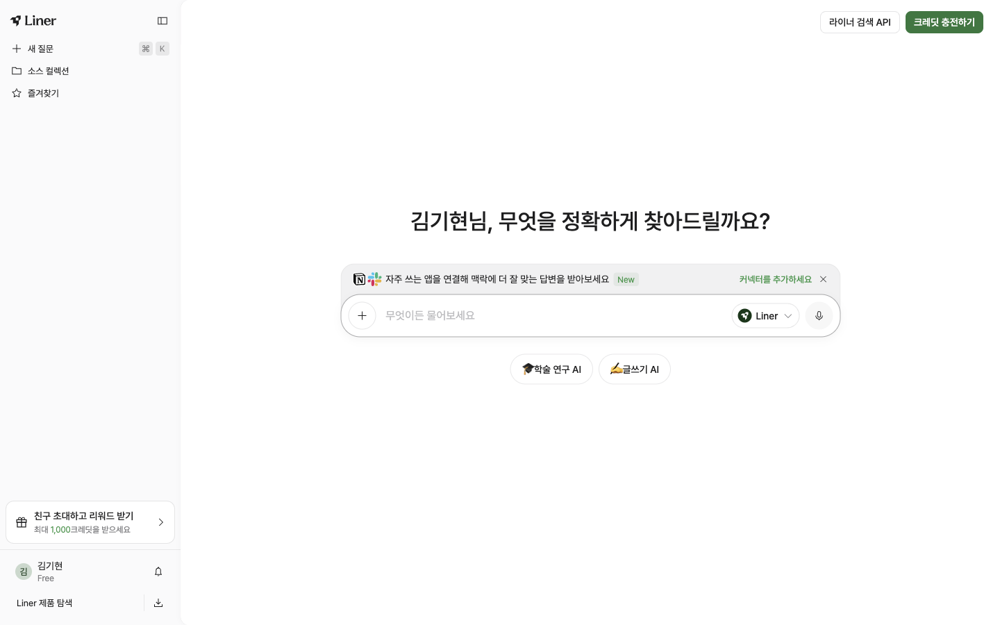
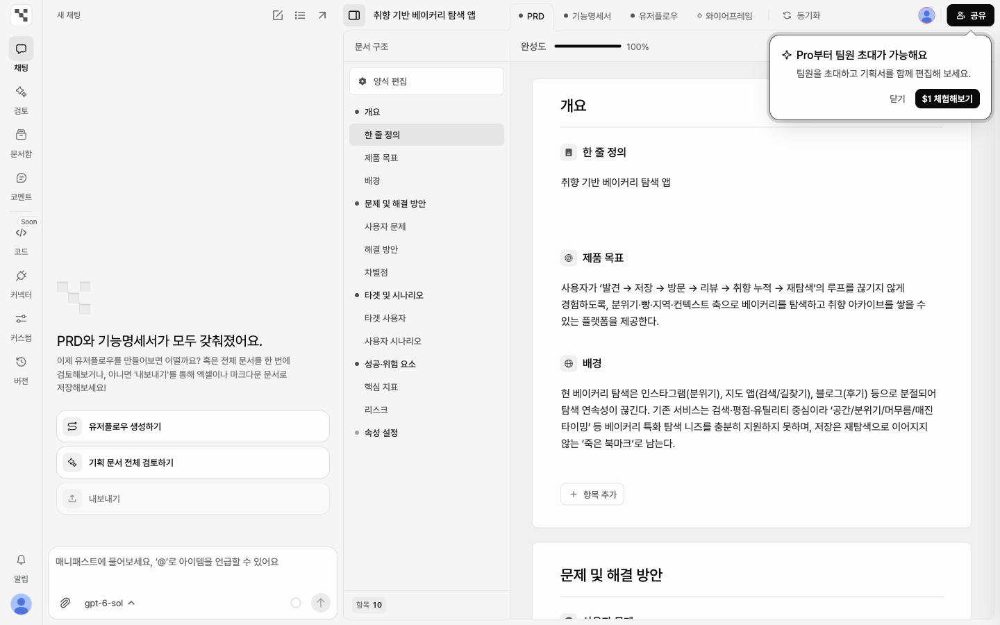

원고는 쓰는 곳 옆에 '고칠 것'이 붙어 있어요
교수님이 미팅에서 한 말, 카톡, 한글 파일 빨간 글씨가 따로 놀지 않고 원고 옆 한 목록에 모여요. 항목을 누르면 해당 문장으로 가고, 고치면 체크해요.

2.3 선행연구 비교 기준
선행연구는 연구 목적, 자료 수집 방식, 분석 관점에 따라 서로 다른 결론에 이른다. 본 연구는 비교 기준을 연구 목적·자료·분석 관점의 세 가지로 정하고1, 각 기준을 고른 이유를 표 2-1에 정리하였다.
표 2-1의 연구는 2015년부터 2022년 사이에 발표된 것으로2, 국내 대학원생을 대상으로 한 질적 연구를 중심으로 골랐다.
특히 지도 미팅 기록을 다룬 연구는 기록의 주체를 학생으로 보는 관점과 교수로 보는 관점으로 나뉜다3. 본 연구는 학생이 기록을 남기고 교수가 확인하는 흐름에 초점을 둔다.
|
상단 메뉴가 '글·자료'이고, 글 하나를 열면 탭으로 열려요. 제목 아래 '메모' 종류 표시, '나만 보기' 공개 범위, '버전', '문장 점검', 서식 도구 막대, 비어 있는 목차 칸이 먼저 보여요. 교수님 피드백은 오른쪽 레일의 '의견', '할 일', '결정·질문'에 흩어져 있어서 쓰다가 찾아가야 해요.
왼쪽은 내 논문 장 목록(장마다 남은 '고칠 것' 개수), 가운데는 원고, 오른쪽은 고칠 것 목록이에요. 각 항목에 어디서 온 피드백인지(미팅·카톡·한글 파일) 표시되고, 누르면 원고의 해당 문장이 칠해져요. 고치면 '고쳤어요'를 눌러 아래로 내려요. 홈의 할 일에도 같은 항목이 보여요.
'글·자료' 탭 이름 → '원고'. 글 탭 열기, '메모' 종류 표시, '나만 보기'(원고는 내 것이고 보낼 땐 보내기 창에서 고름), 서식 도구 막대(글자를 고르면 작게 뜸), '문장 점검'(도우미에게 말로), 레일 5개 → 3개(고칠 것·도우미·자료). '버전'은 '이전 본 보기' 하나로.
확정(사용자 답): 메뉴 홈·미팅·원고, 할 일과 피드백 하나로, 피드백은 대면 말·카톡·한글 빨간 글씨. 제안: 왼쪽 장 목록, 문장에 피드백 번호 붙이기, 서식 막대 숨기기.
교수님이 빨간 글씨로 고친 한글 파일을 원고 화면에 끌어다 놓으면, 빨간 글씨만 골라 내 원고의 어느 문장인지 맞춰 줘요. 맞는 문장을 못 찾은 것만 직접 고르면 돼요. 넣은 항목은 '고칠 것'에 '한글 파일 빨간 글씨'로 들어가요.
지금 앱 코드에는 한글(hwp) 파일을 읽는 부분이 없어요(앱 화면 코드에서 'hwp'를 찾아봤을 때 0건). 빨간 글씨를 정확히 뽑을 수 있는지는 hwp·hwpx 형식별로 따로 확인해야 해요. 안 되면 '빨간 글씨 부분 캡처 올리기'로 대신할 수 있어요.
설명용 가상 데이터예요. 원고 문장, 교수님 말, 파일 이름은 예시로 지은 것이에요.
참고한 화면


